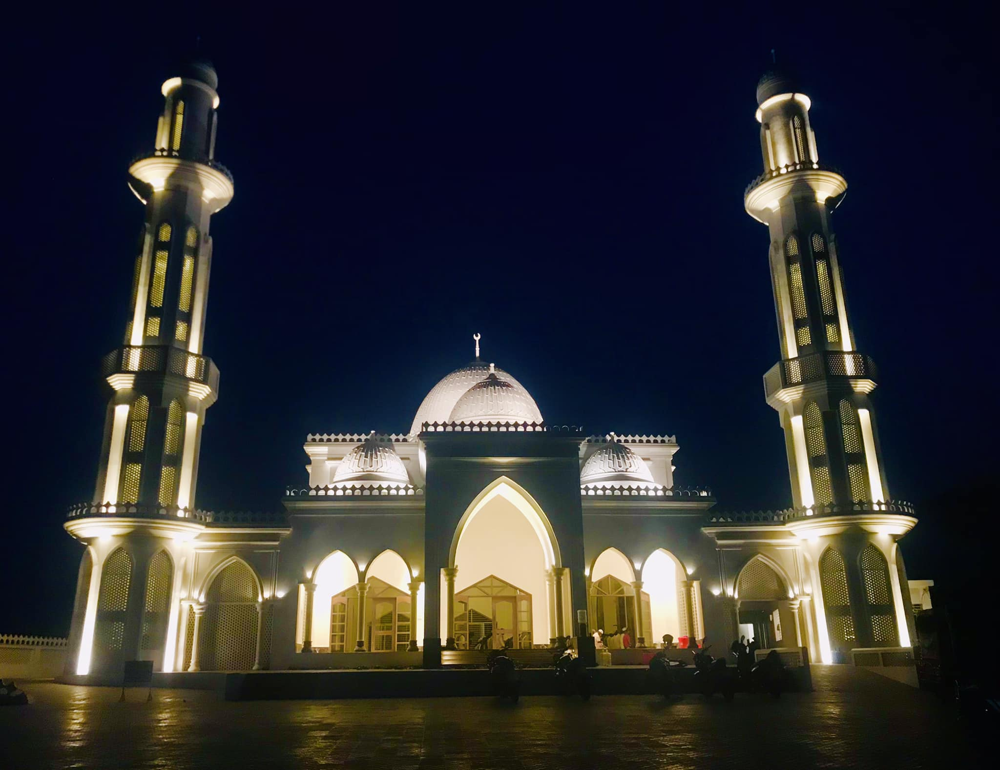
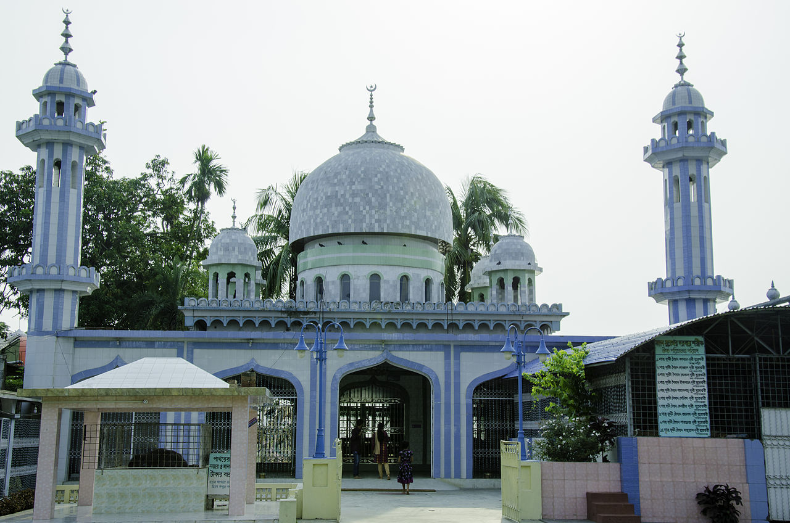
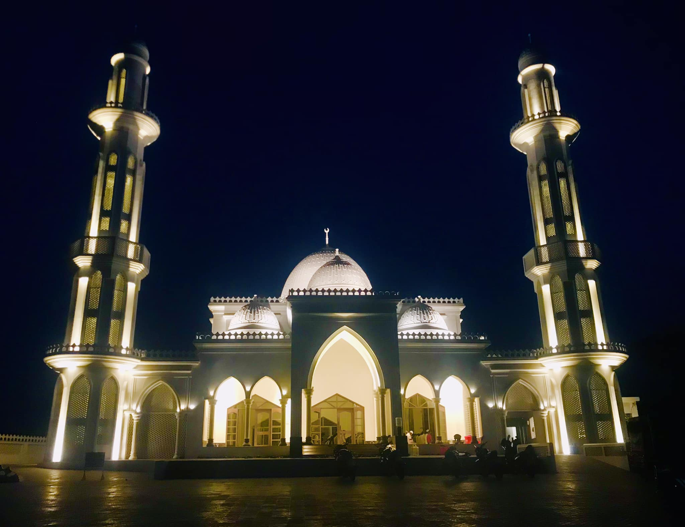
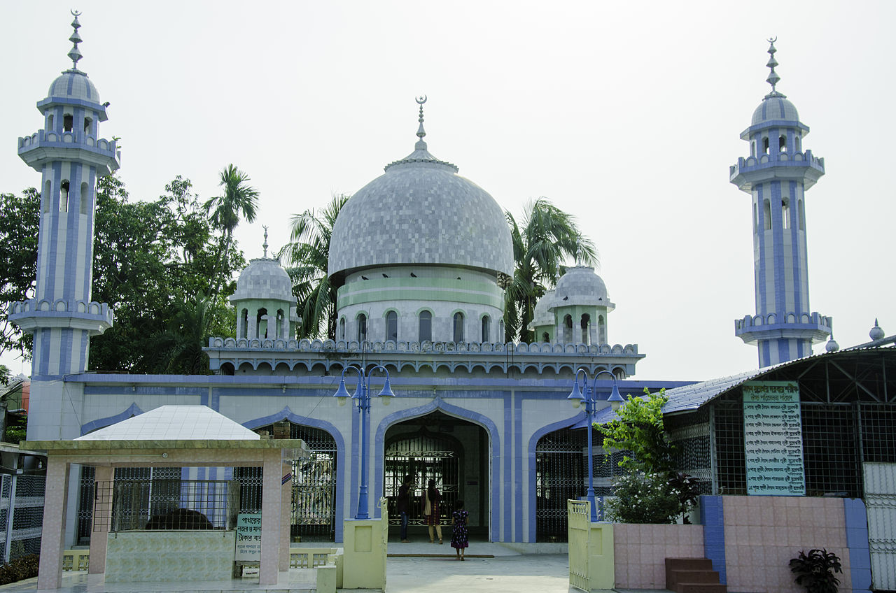

Welcome To
Explore Shariatpur
This website is your guide
to discovering the beauty, culture, and attractions
of
Shariatpur district
This website is your guide
to discovering the beauty, culture, and attractions
of
Shariatpur district
Welcome to Explore Shariatpur! This website is your guide to discovering the beauty, culture, and attractions of Shariatpur district.
Shariatpur was named after Haji Shariatullah (1781–1840), who was the founder of Faraizi Movement and an eminent Islamic reformer/revivalist during British Raj.[4] It was established as a district on 1 March 1984.[5] In 1971 the Pak army in collaboration with their local agents conducted mass killing and plundering; they also set many houses of the district on fire. During Bangladesh Liberation War a number of encounters were held in Shariatpur Sadar Upazila between the freedom fighters and the Pak army in which about 313 Pak soldiers were killed. A number of freedom fighters were killed in two encounters and one frontal battle with the Pak army in Bhedarganj Upazila. Nine freedom fighters including Ahsanul Hoque and Abdul Wahab were killed in an encounter with the Pak army at a place on the southern side of Damudya College. Muktijoddha and Mujib Bahini jointly conducted attack on the Pak army by guerrilla technique in the upazila. Five freedom fighters were killed in an encounter with the Pak army in Gosairhat Upazila. The freedom fighters of Naria raided the Naria Police Station and captured all the arms and ammunitions of the thana. In retaliation, the Pak army sacked the nearby villages. During Bangladesh Liberation War a number of encounters were held between the freedom fighters and the Pak army in Zanjira Upazila in which a number of freedom fighters were killed.It Consists of six Upazilas namely shariatpur Sadar, Janjira, Naria, Bhedargonj, Damuddya and Goshairhat.
 


